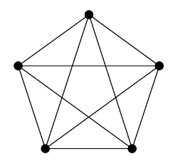

Graphs and Planarity
A graph is planar if it can be drawn so that there are no edge crossings (except at vertices). As an arbitrary graph can be drawn in many different ways, it might seem hopeless to characterize when it is planar, but there is a remarkable theorem of Kuratowski. It says that a graph is planar if and only if it does not contain a subgraph that can be reduced via series reductions to K5 or K3,3.
Here, a "series reduction" replaces a vertex of degree 2 with a single edge:
 |
and K5 and K3,3 are the following graphs:
|  |  |
The theorem essentially says that if you can arrive at either to K5 or K3,3 by deleting vertices or edges, and by performing series reductions, then the graph is not planar, and vice versa.
The program below allows you to test whether or not is planar. You can draw a variety of graphs, delete vertices and edges, and perform series reductions to obtain subgraphs. You can drag vertices to change the drawing of the graph, and double-click on a vertex or edge to select it. You can test whether the current subgraph is isomorphic to K5 or K3,3, or drawn in a planar fashion.
You'll need a modern browser to view the app. It has been tested in Firefox (Windows/Linux).
last modified: 8/20/2014